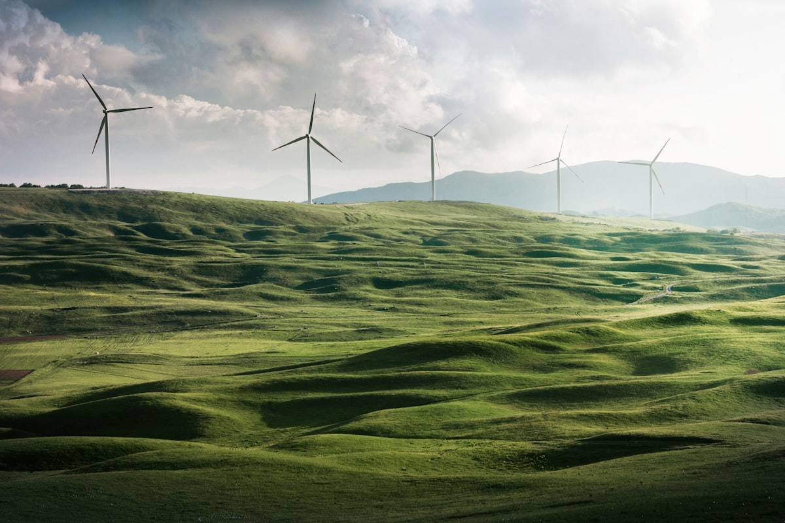

Обов'язковий документ-дозвіл для підприємств, діяльність яких може суттєво впливати на довкілля — обов'язковий за українським законодавством з серпня 2025 року, узгоджений із європейськими стандартами.
Чинний з 8 серпня 2025 року — Закон України «Про інтегроване запобігання та контроль промислового забруднення» · Директива 2010/75/EU

Інтегрований екологічний дозвіл (ІЕД) — це обов'язковий документ-дозвіл для підприємств, діяльність яких може суттєво впливати на довкілля. Він об'єднує всі екологічні вимоги — щодо викидів, водокористування, поводження з відходами, охорони ґрунту та екологічного моніторингу — в одному юридично обов'язковому документі.
ІЕД встановлює найкращі доступні технології (НДТМ) як базовий стандарт допустимих викидів та споживання ресурсів. Це регулярно оновлювані європейські довідкові документи (BREF), що визначають найефективніші та найсучасніші методи запобігання чи зменшення впливу на довкілля.
На відміну від попередньої системи окремих галузевих дозволів, ІЕД охоплює весь екологічний вплив вашого об'єкта в межах одного інтегрованого дозволу — зменшуючи адміністративне навантаження та водночас посилюючи екологічну відповідальність.
Впроваджується через Закон України «Про інтегроване запобігання та контроль промислового забруднення», узгоджений із Директивою ЄС про промислові викиди (IED) 2010/75/EU та її попередницею — Директивою IPPC 96/61/EC.
Впроваджує найкращі доступні технології (НДТМ) відповідно до директив ЄС про промислові викиди — відкриваючи доступ до європейських ринків та фінансування.
Обов'язкові граничні значення викидів на основі BAT-AEL призводять до помітного покращення якості повітря та води навколо промислових об'єктів.
Один документ замінює окремі дозволи на атмосферу, воду, відходи та ґрунт. Менше продовжень, менше перевірок, єдині вимоги до звітності.
Затверджений ІЕД є чинним протягом усього строку експлуатації об'єкта, забезпечуючи стабільну регуляторну передбачуваність для довгострокового інвестиційного планування.
ІЕД є обов'язковим для об'єктів, що підпадають під Додаток I Закону. Вони відповідають промисловим секторам із високим впливом, визначеним пороговими значеннями Директиви ЄС IED.
Котельні установки з тепловою потужністю понад 50 МВт; нафто- та газопереробні заводи; коксові батареї; установки газифікації та зріджування вугілля.
Установки агломерації та обпалювання руди; виробництво чавуну та сталі; ливарні підприємства чорних металів потужністю понад 20 тонн на добу.
Великомасштабне виробництво органічних та неорганічних хімікатів, добрив, засобів захисту рослин і фармацевтичних речовин.
Установки утилізації чи видалення небезпечних відходів; сміттєспалювальні заводи для побутових відходів; звалища потужністю понад 10 тонн на добу.
Промислова поверхнева обробка з використанням органічних розчинників понад встановлені порогові значення; фарбувальні, обезжирювальні та ламінувальні підприємства.
Установки інтенсивного вирощування птиці чи свиней понад встановлені порогові значення поголів'я; великі забійні цехи та підприємства харчової переробки.
Визначення, чи підпадає ваш об'єкт під Додаток I Закону, та які документи BREF і висновки НДТМ застосовуються до вашої діяльності.
Нові або суттєво модернізовані об'єкти повинні спочатку пройти процедуру ОВД та отримати чинний висновок з ОВД перед поданням заявки на ІЕД.
Підготовка повного пакету документів для ІЕД — включно з технічним описом, аналізом відповідності НДТМ, рівнями викидів, планом моніторингу — та подання до Міністерства захисту довкілля.
Перевірка повноти документів Міністерством. Недоліки можуть бути зазначені для виправлення у встановлений термін без перезапуску відліку.
Встановлений законом період громадського обговорення для отримання зауважень. Державна екологічна інспекція одночасно проводить перевірку об'єкта на місці.
Аналіз усіх отриманих зауважень та результатів перевірки. Міністерство видає обов'язкове рішення про надання чи відмову в ІЕД, яке публікується в Реєстрі інтегрованих дозволів.
Повний аудит вашого об'єкта на відповідність застосовним висновкам НДТМ — виявлення технічних, операційних та документальних розривів до подання заявки.
Підготовка повної заявки на ІЕД — технічний опис, обґрунтування НДТМ, графіки граничних значень викидів, плани моніторингу та звітності.
За потреби ми супроводжуємо попередню процедуру оцінки впливу на довкілля паралельно, щоб скоротити загальний термін.
Підготовка матеріалів для громадського обговорення, відповіді на звернення громадськості та підтримка під час перевірки на місці.
Постійний моніторинг відповідності, періодична звітність та перегляд чи зміна ІЕД у разі зміни операційних параметрів.

За новим законом початок або продовження діяльності без чинного ІЕД є серйозним адміністративним і кримінальним порушенням. Заходи впливу застосовуються негайно та автоматично після виявлення.
Так. Існуючі об'єкти, на які поширюється закон, повинні перейти на систему ІЕД протягом встановленого законом перехідного періоду. Чинні окремі екологічні дозволи (на атмосферу, воду, відходи) залишаються дійсними до заміни на ІЕД, але перехід не може відкладатися безстроково. Jureco може оцінити конкретний перехідний термін для вашої категорії об'єкта.
Висновки НДТМ — це офіційні рішення Європейської комісії, що базуються на довідкових документах BREF (Найкращі доступні технології). Вони визначають найсучасніші та економічно доцільні технології для кожного промислового сектору і встановлюють відповідні діапазони BAT-AEL (пов'язаних рівнів викидів). Граничні значення викидів вашого ІЕД мають відповідати цим діапазонам BAT-AEL — а не просто національним стандартам, як раніше.
Лише встановлені законом етапи розгляду тривають понад 90 робочих днів (30 — попередній розгляд + 30 — громадське обговорення + 30 — рішення). На практиці повний процес, включно з підготовкою до подання, розробкою документації та можливими додатковими запитами, займає 4–7 місяців для стандартного об'єкта. Для нових об'єктів, що потребують попередньої ОВД, варто планувати 10–14 місяців загалом.
ІЕД видає Міністерство захисту довкілля та природних ресурсів України. Рішення публікується в Єдиному державному реєстрі інтегрованих екологічних дозволів. Рішення про відмову можна оскаржити в адміністративному чи судовому порядку, а Jureco надає повну юридичну підтримку протягом усього процесу оскарження.
Суттєві зміни об'єкта — збільшення потужності, зміна процесів, модифікація джерел викидів — як правило, запускають процедуру перегляду ІЕД. Незначні зміни можна зареєструвати як оновлення чинного дозволу. Jureco стежить за регуляторними порогами та заздалегідь консультує клієнтів, коли плановані зміни потребуватимуть формальної процедури перегляду.
Зв'яжіться з нашим інженерним відділом, щоб отримати негайний діагностичний аналіз ваших структурних вимог відповідно до чинного екологічного законодавства.